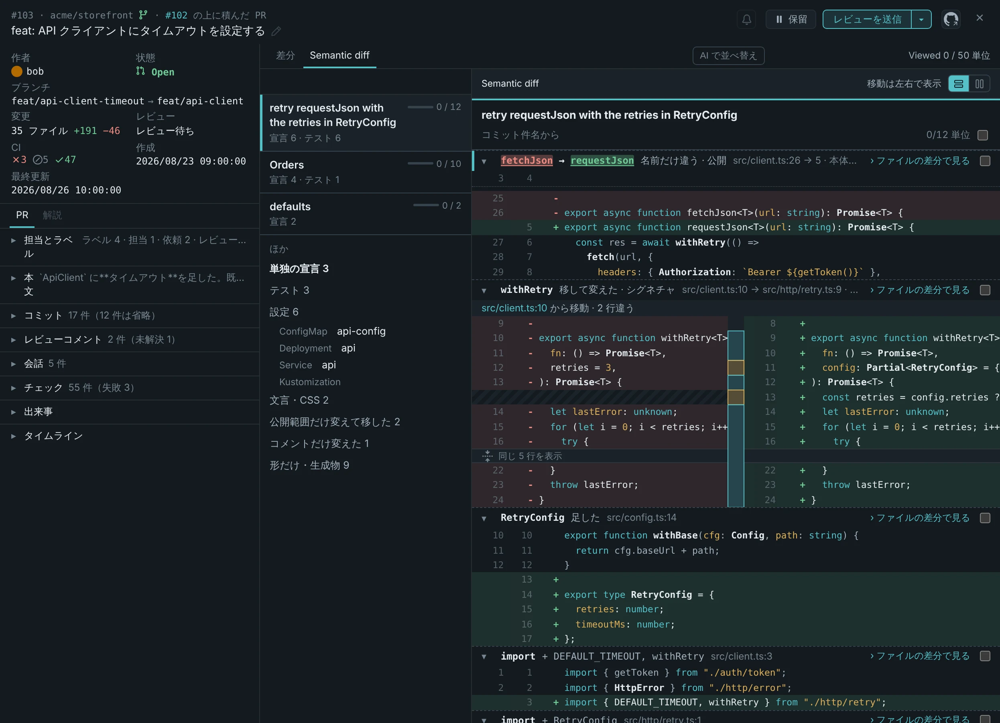
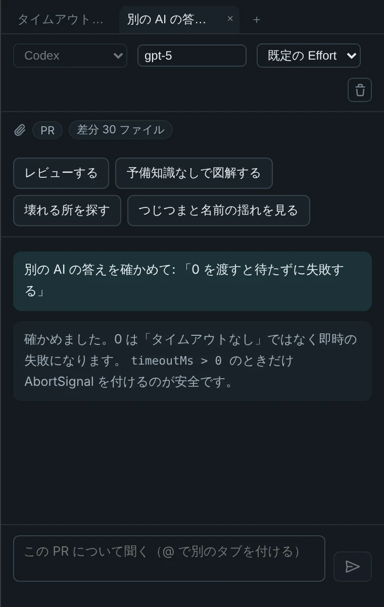

最初のレビュー
PR を選んでから、レビューを送るまでの流れです。手順はそれぞれ独立しているので、要らないものは飛ばせます。
PR を選ぶ
左の一覧には レビュー依頼・自分の PR・全部 の3つのタブがあります。
優先度で並べると 読む（自分のレビュー待ち）・動く（自分が動かす番）・待つ（ほかの人待ち）・静観（今は何もしなくてよい）に分かれます。上から開きます。

スタックの中の位置を見る
⌘G でグラフを開きます。PR の積み重なりごとに枠で囲みます。PR にポインタを重ねると、その優先度になった理由が出ます。
PR を押すとその系列が光り、#n を開く で読み始めます。

差分を読む
読み終えたファイルには Viewed を付けます。作者があとでそのファイルを変えると、Lythe が印を外して知らせます。
大きな PR では Semantic diff に切り替えて関数や型ごとに読むか、AI で並べ替え を押して AI CLI が勧める順で読みます。 Semantic diff は AI を使わず、TypeScript・Rust・Go・CSS と設定ファイルを構文で解析します。

AI に聞く
右の Chat は、PR・差分・自分のコメントを選んだ CLI に渡します。レビューする や 壊れる所を探す などの定型文から始められます。 CLI は自分のアカウントでその AI サービスへ送ります。
別の意見がほしいときは、別の CLI でタブを開き、最初の答えを渡します。

コメントしてレビューを送る
行の頭の印を押すとコメントを書けます。送るまでは下書きのまま残ります。
レビューを送信 で GitHub にまとめて送ります。承認（Approve）とマージも同じ画面からできます。
裏でレビューさせる
設定の「エージェントとプロンプト」で 自動レビュー をオンにします。Lythe を開いている間、レビューを頼まれた PR を優先度の順にレビューします。 1つの PR で CLI を何度も起動するので、利用枠を使います。
結果は Chat の 自動レビュー タブに判定つきで出ます。自分で送るまで GitHub には何も投稿しません。

自分の観点を覚えさせる
Lythe はレビューのコメントと Chat での指示をこの Mac に溜めます。50 件溜まったら、設定の「観点」で 観点を作り直す を押すと、AI CLI が観点にまとめます。
切っていない観点は Chat の問い合わせに毎回添えられるので、自分がいつも見るところを AI も見るようになります。
もっと使う
レビューの前後に自分のコマンドを走らせる
hook は、リポジトリごとに登録するシェルのコマンドです。走るのは2回で、読み始めたら（その PR で初めて Viewed を付けたか、Chat に聞いたとき）と、Lythe からレビューを送ったらです。GitHub Projects のカードを In review に動かす、Slack に知らせる、ラベルを付ける、といった使い方ができます。github.com で送ったレビューでは走りません。
作るのは PR の Chat に頼むのが簡単です。たとえば「読み始めたらこの PR の Status を In review にしたい」と送ると、AI が ID を調べてシェルのコマンドで答えます。そのコードの上の hook に登録 を押し、いつ走らせるかを選んで、開いている PR で試してから登録します。
# 読み始めたら、この PR の Status を「In review」にする
gh project item-edit --id "$LYTHE_ITEM_ID" \
--project-id PVT_xxx --field-id PVTSSF_xxx \
--single-select-option-id 47fc9ee4手で書くときは、設定 › 対象と検索条件 の hook を足す から書きます。登録した hook もここに並び、直す・止める・外すができます。
コマンドには次の環境変数が入ります。
LYTHE_EVENT | start か end |
LYTHE_REPO | owner/repo |
LYTHE_PR | PR の番号 |
LYTHE_PR_URL | PR の URL |
LYTHE_PR_ID | PR の node id（gh api graphql 用） |
LYTHE_HEAD | head のコミット SHA |
LYTHE_ITEM_ID | PR が入っている Project が1つのとき、その項目の id |
LYTHE_ITEMS | 全部の 「Project の id=項目の id」（1行に1つ） |
LYTHE_REVIEW | APPROVE・REQUEST_CHANGES・COMMENT（送ったときだけ） |
hook はログインしたシェルで、ホームディレクトリから走ります。PR のコードの中では走りません。60 秒で止まります。失敗してもレビューは止めません。送ったときの hook は送れた後に走り、失敗したら終了コードと出力の最後の数行を出します。成功したときは何も出しません。
コマンドは自分の gh のログインで動きます。Projects の項目を書き換えるには、権限を1つ足します。gh auth refresh -h github.com -s project
PR を出す前に自分の変更を読む
⌘O で git のリポジトリのフォルダを選ぶと、ブランチを切った所から作業ツリーまで（未追跡のファイルも含む）の差分が出ます。差分・Viewed・行コメントは PR と同じように使えます。
コメントを書いたら コメントを渡す から Chat に渡すか、その変更を書いた開発セッションに貼る文としてコピーします。Lythe はコードを書き換えません。
PR を保留にする
作者の対応待ちの PR は、PR のヘッダーの 保留 を押します。PR はグループから外れ、一覧のいちばん下の 保留 で待ちます。
作者が push するか返信したとき、またはレビューを頼み直されたかメンションされたときに、自動で戻ります。GitHub には何も書きません。
Chat をもっと使う
Chat の入力欄で @ を打つと、別のタブの答えを添付できます。Claude の答えを Codex に確かめさせる、といった使い方です。
AI が答えている間も打てます。送ったものはキューで待ち、答えが終わると送られます。
答えの中の src/a.ts:42 のようなファイルの位置はリンクになります。押すと差分のその行を開きます。
CLI 自身の道具（ファイルを読む・コマンドを走らせる・Web）は、その CLI の設定に従います。ターミナルで使うときと同じです。Lythe の道具のうち GitHub に書くもの（レビューの投稿など）は、先に確認が出ます。
一覧に出す PR を選ぶ
一覧には、自分が作者・担当・レビュー依頼先の PR が、全部のリポジトリから出ます。設定 › 対象と検索条件 で、リポジトリ（owner/repo、または owner だけでその持ち主の全部）や GitHub の検索条件を足せます。
チームが GitHub Projects でレビューの期日を管理しているなら、同じ所でリポジトリごとに日付の項目を選びます。期日のある PR が一覧の上に、近い順で並びます。Projects を読むには gh auth refresh -h github.com -s read:project が要ります。
リンクから開く・差分を広く読む
GitHub の PR の URL の https を lythe に打ち替えると（lythe://github.com/owner/repo/pull/123）、その PR が Lythe で開きます。/files などが付いていても開きます。
⌘B で Zen になり、一覧と Chat をしまって差分を窓いっぱいに出します。右の端に触れると Chat が出ます。
覚えておくと速いキー
| ⌘P | PR・ファイルへ移動 |
| ⌘⇧P | 操作を探す |
| ⌘G | グラフの開閉 |
| ⌘F | 最後にクリックしたペインの中を検索 |
| ⌘B | Zen（差分だけにする） |
| ⌘O | ローカルのフォルダを開く |
| ⌘1 / ⌘2 | 一覧の検索へ / Chat の入力へ |
| ⌘R | 取り直す |
| ⌃Tab | PR を移る |
| ⌥Tab | Chat のタブを移る |
| j / k | 差分で次・前のファイル |
| n | 次の未読のファイル |
| v | Viewed にして次の未読へ |
| s | 差分と Semantic diff の切り替え |
| ⌘ , | 設定（キーの付け替えもここ） |